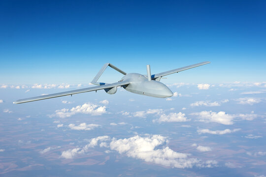

In Greek mythology, Daedalus (Greek: Δαίδαλος) was a skillful architect and craftsman, seen as a symbol of wisdom, knowledge and power. Among his most famous creations are the wooden cow for Pasiphaë, the Labyrinth for King Minos of Crete which imprisoned the Minotaur, and wings that he and his son Icarus used to attempt to escape Crete.
Daedalus UAV Systems is a company specialized in the development of custom UAV platforms tailored for a wide range of applications. We offer something truly unique in the Greek market, and driven by the business opportunities emerging globally, we are now looking to expand internationally—both within Europe and beyond. Our aim is to address gaps in the global UAV industry by providing customized, low-cost solutions across sectors such as smart agriculture, search and rescue, aerial surveillance, and more.
Our philosophy centers on the creation of affordable, tailor-made UAV systems using cutting-edge technologies such as 3D printing, advanced composite materials, and AI. Our multidisciplinary team includes experienced aerospace, mechanical, electrical, and chemical engineers, as well as skilled software developers, test pilots, and operators, all committed to elevating our company to the international stage.

Through our participation in DEFEA 2025, the Thessaloniki International Fair (TIF), and other technology and innovation exhibitions, we’ve showcased our capabilities and passion for delivering high-tech, high-quality solutions both in Greece and abroad.
To date, our clients have included:
Hellenic National Defence General Staff
National Guard General Staff (Cyprus)
Hellenic Police
Hellenic Fire Service
Cyprus Fire Service
Hellenic Coast Guard
Civil Protection of Central Macedonia
Over 100 private clients for security, photogrammetry, and smart farming services
In total, we have built:
250 military-grade UAS, 100 of which are capable of carrying payloads
300 loitering munitions
500 surveillance UAS
30 firefighting UAS
30 search and rescue UAS
50 agricultural spraying UAS
500 UAS for photogrammetry applications
All systems are developed and tested under real-world conditions for their intended use, giving us a significant operational advantage through immediate field feedback. Every UAV undergoes extensive testing as soon as it rolls off the production line. For example:
Out of the 1,660 UAS manufactured through Q4 of 2024, only 15 experienced technical issues, all of which were proactively addressed across the entire fleet of similar models
All military UAS have been tested at NAMFI (NATO Missle Firing Installation) and meet the latest NATO STANAG standards with excellent performance ratings
Agricultural UAS are field-tested daily by partnering academic institutions, farmers, and agronomists
Looking ahead, our goal is to expand our client base to include more government and private-sector partners, both in Greece and internationally. One of our key strategic advantages lies in our production philosophy, which allows for fast, flexible, and independent manufacturing—including the option for licensed local production abroad.
The global UAV market is expanding rapidly, as the range of use cases grows—from basic aerial photography to complex autonomous missions such as search and rescue, aerial firefighting, and saturation of enemy air defenses.